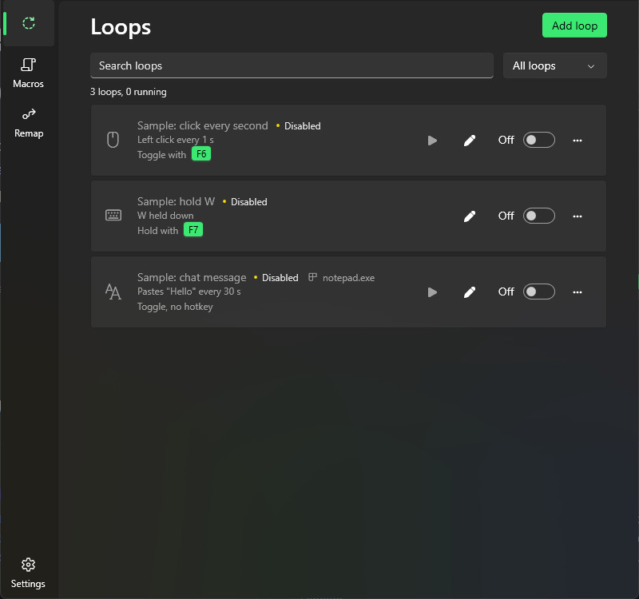

A good puppy for everything you repeat.
Loops, recorded macros and key remaps, with an overlay that never steals focus from your game or any fullscreen app.
Version {{VERSION}} · updates itself · installs without administrator rights · all releases
Everything you repeat, in one place
Your AI builds it MCP readyBeta
Connect your AI app, like Claude, and just ask: "make a macro that…". Done.
Loops
Press a key or a combination like Ctrl+C, click (also double, at a fixed point), keep a key or button held down, or paste a text, every 10 ms to 24 h. Several actions, each on its own timer.
Macros
Record keys, clicks, scroll and mouse movement, then edit every step, in a list or as code with suggestions and live checks. Play once, N times or in a loop, at ×0.25 to ×4 speed.
Remap
A key, a mouse button or a combination like Alt+J sends another key, button or combination, in all apps or only in the app you choose. Ctrl, Alt, Shift and Win can be remapped too, left and right apart.
Overlay mode
A small always-on-top panel over your game or fullscreen app, and round floating buttons you place anywhere, each with its own opacity. Use both or only the buttons. They show what works in the app in front. Click them to start or stop without the app losing focus.
Hotkeys
Any key, mouse button or combination with Ctrl, Alt, Shift or Win, also Ctrl+click or Alt+scroll wheel. Toggle or Hold, in all apps or only in the app you choose. Stop all, Overlay mode and Record are one shortcut away.
Always up to date
PuppyMacro checks for new versions and updates itself with one click. Your loops, macros and remaps stay.
Share
Export the loops, macros and remaps you choose to one file, and import a friend's with a double-click. Nothing of yours is replaced: imported items come new and disabled.
Your language
In your Windows language, or the one you choose: English, Italiano, Français, Español, Deutsch, Português, Română, Shqip, Русский, العربية, 日本語, 한국어 and 中文.
Privacy
PuppyMacro does not collect or send personal data. With Check for updates automatically (on by default), it contacts GitHub when it starts and every 12 hours to check for and download updates; the GitHub General Privacy Statement applies to those requests. Turn it off in Settings > Data and updates.
PuppyMacro sends nothing to AI services. With Allow AI access on (off by default), the AI apps on your PC that you connect can read your loops, macros, remaps and settings through PuppyMacro: what they read goes to that app's provider, under its own privacy policy.